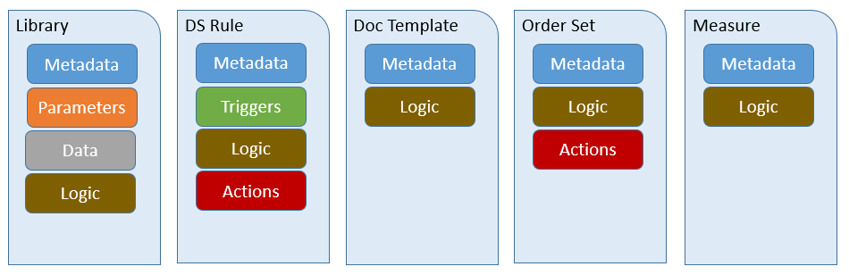

Current Build


For the purposes of this guide, a Knowledge Artifact is a structured, computable, and shareable representation of clinical knowledge. A comprehensive definition of clinical knowledge is of course beyond the scope of this guide, but we effectively mean any knowledge relevant to improving patient care. For example, "Patients with diabetes should have regular comprehensive foot examinations to identify risk factors predictive of ulcers and amputations" is a statement of clinical knowledge. A knowledge artifact would then be some representation that can be used to integrate that knowledge into existing healthcare delivery systems.
There are any number of ways to accomplish this integration of clinical knowledge, ranging from direct implementation within an existing EHR system all the way up to the use of high-level representation and reasoning systems that can adapt clinical workflow to provide cognitive support to clinicians. Within this guide, we aim to provide a representation that is both flexible enough to represent a broad range of knowledge artifacts, but simple and specific enough to enable automated integration of the content.
To acheive these goals, we define several components that are present in a broad variety of knowledge artifacts:
| Component | Description |
|---|---|
| Metadata | Information about the knowledge artifact such as status, publisher, documentation, and supporting evidence. |
| Parameters | Values that can be provided at the time of evaluation to influence the behavior of the artifact based on setting-specific configuration. |
| Data | Clinical information used by the artifact as part of the representation of knowledge |
| Actions | Descriptions of actions to be taken as part of the implementation of knowledge |
| Triggers | Information about what events should trigger the use of the artifact |
| Logic | Expressions used to represent reasoning such as whether or not some criteria is satisfied, or calculation of new values from existing one. |
These components are then combined in various ways to represent several different types of knowledge artifacts:
| Artifact Type | Description | Example |
|---|---|---|
| Library | A sharable package of clinical logic expressed in Clinical Quality Language. | Expressions that define the criteria that must be met to determine whether or not a patient has diabetes. |
| DecisionSupportRule | A decision support rule of the form [on Event] if Condition then Action, defining actions that shoud be taken whenever some condition is met in response to a particular event. | On admission of a patient, if the patient has diabetes and has not had a recent foot examination, place an unsigned order for a comprehensive foot exam. |
| DocumentationTemplate | A structured form for recording information on a patient into a set of predefined data slots. | A form containing the information that should be gathered during a comprehensive diabetic foot exam. |
| OrderSet | A pre-defined and approved group of orders related to a particular clinical condition (e.g., hypertension treatment and monitoring) or stage of care (e.g., hospital admission to Coronary Care Unit). Order sets are used within electronic health record systems as a checklist for physicians when treating a patient with a specific condition. An order set is a structured collection of orders presented to the physician in a computerized physician order entry system (CPOE). | The specific tasks that should be performed to provide effective treatment for a new diagnosis of diabetes. |
| Measure | A quantitative tool to assess the performance of an individual or organization with respect to a specified process or outcome via the measurement of actions, processes, or outcomes of clinical care. Quality measures are often derived from clinical quidelines and are designed to determine whether the appropriate care has been provided given a set of clinical criteria and an evidence base. | Percentage of patients aged 18-75 years of age with diabetes who had a foot exam during the measurement period. |
In addition to the definitions provided by the base resources, this guide provides additional information on how to use these resources consistent with other decision support service specifications, as described in the following sections.
As with any FHIR resource, the instance identity is specified by the id element. In addition, modules may have logical identifiers based on the content or behavior they provide. For example, the CMS or NQF identifiers for measure content. These identifiers can be provided in the identifier element.
In addition to identity, the ModuleMetadata structure allows, but does not require, a version to be specified.
When using the identifier element to provide the Entity Identifier for a module consistent with the Decision Support Service (DSS) specification, the following mappings apply:
| DSS Model Element | FHIR Element | Example |
|---|---|---|
| businessId | Identifier.value | hemoglobin-control-rule |
| scopingEntityId | Identifier.system | com.clinica |
| version | KnowledgeModule.version | 1.0.0 |
The ModuleMetadata structure provides several elements related to documentation of the module, including title, description, purpose, and usage. In addition to these elements, additional supporting documentation, citations, and evidence can be provided via the relatedResource element.
| Status | CDS KAS Mapping | DSS Mapping |
|---|---|---|
| draft | Draft | DRAFT |
| test | InTest | DEFINED |
| active | Active | APPROVED, PROMOTED |
| inactive | Inactive | REJECTED, RETIRED |
In addition, the ModuleMetadata structure provides elements for tracking publication information including contributor, publisher, steward, and rightsDeclaration.
© HL7.org 2011+. FHIR STU3 Candidate (v1.4.0-8453) generated on Mon, Jun 6, 2016 20:22+0000. QA Page
Links: Search  |
Version History |
Table of Contents |
Compare to DSTU2 |
|
Version History |
Table of Contents |
Compare to DSTU2 |
 |
Propose a change
|
Propose a change